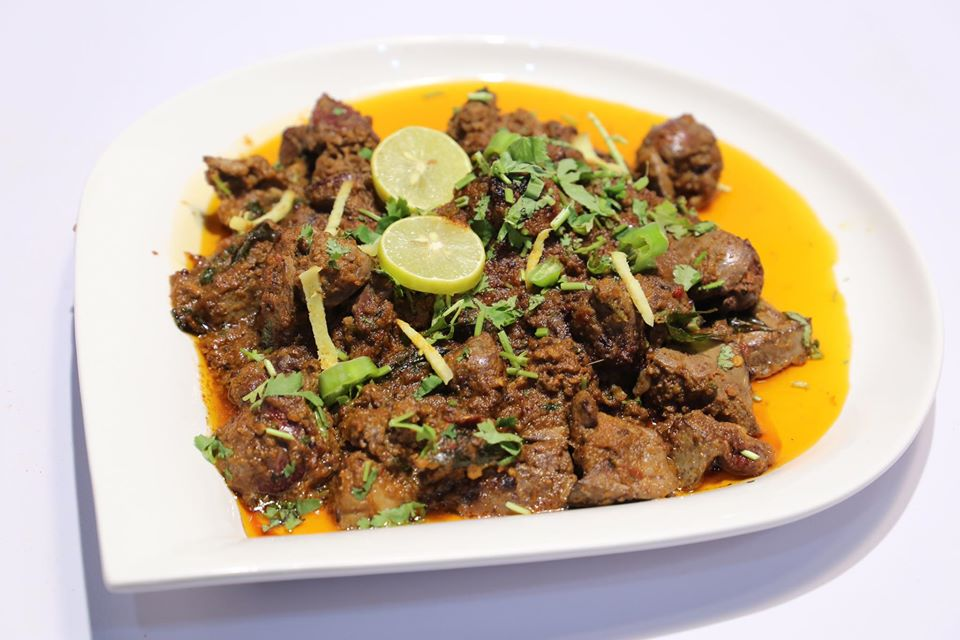

Home Page
Tasty Kaleji Recipe

Description
Tawa Fry Kaleji is a great recipe to prepare for festive feasts. You can prepare it for a lavish lunch/dinner. It can be easily prepared in no time and tastes heavenly. All you have to do is marinate the mutton liver and then fry it on a pan. Garnish it with some freshly chopped coriander and you're done. Tawa Fry Kaleji has succulent mutton pieces coated in a melange of spices and served with hot steaming chapatis. If you're busy prepping up for the night's feast, then Tawa Fry Kaleji can be your go-to option for breakfast/lunch. This luscious recipe will make a great start to your special day. Do try this recipe out and let us know if you enjoyed eating it.
Ingredients
- 250 gm chopped mutton liver
- 1 teaspoon ginger paste
- 1 teaspoon cumin powder
- coriander leaves as required
- 1 teaspoon red chilli powder
- 1 teaspoon crushed to paste green chilli
- 1 teaspoon garam masala powder
- 1 teaspoon garlic paste
- 1 teaspoon coriander powder
- 1 1/2 tablespoon vegetable oil
- salt as required
Steps
- Marinate the mutton liver pieces. In a bowl, add mutton liver, green chili paste, red chili powder, cumin powder, coriander powder, garam masala, salt, ginger, and garlic paste. Mix everything well so that mutton pieces get coated with the marinade. Keep it aside for 15-20 mins.
- Heat oil in a pan.
Heat oil in a frying pan, and add marinated mutton pieces.
- Fry the mutton pieces
Shallow fry the mutton pieces for about 10-15 mins. Once done, switch off the gas flame.
- Your Tawa Fry Mutton Kaleji is ready
Garnish it with chopped coriander leaves. Your Tawa Fry Mutton Kaleji is ready. Serve it hot with chapatis.
Return to Top